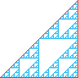
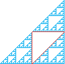
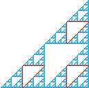
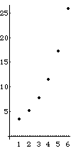

Block Fractals
Background - Perimeter of the Gasket
First we compute the perimeter of the gasket by finding the perimeters of the triangles that bound it outside and inside.



Level 1
Level 2
Level 3
Level 4
Level
Triangle Perimeter
Number of Triangles
Perimeter of that Level
1
2 + sqrt(2)
1
2 + sqrt(2)
2
(2 + sqrt(2))/2
1
(2 + sqrt(2))/2
3
(2 + sqrt(2))/4
3
3*(2 + sqrt(2))/4
=
(3/2)*((2 + sqrt(2))/2)
4
(2 + sqrt(2))/8
3
2
3
2
*(2 + sqrt(2))/8
=
(3/2)
2
*((2 + sqrt(2))/2)
...
...
...
...
n
(2 + sqrt(2))/2
n-1
3
n-2
3
n-2
*(2 + sqrt(2))/2
n-1
=
(3/2)
n-2
*((2 + sqrt(2))/2)

Summing the perimeters through level n gives
(2 + sqrt(2)) + ((2 + sqrt(2))/2)*(
1 + (3/2) + ... + (3/2)
n-2
)
Recognizing the
last bracketed sum
as a finite
geometric series
, we see it sums to
(1 - (3/2)
n-1
)/(1 - (3/2))
After some reduction, we see the sum of the perimeters through level n is
(2 + sqrt(2))*(3/2)
n-1
As n -> infinity, the sum of the perimeters -> infinity and so
the gasket has infinite perimeter.
Perim sum vs level
Return to
Gasket perimeter and area
.